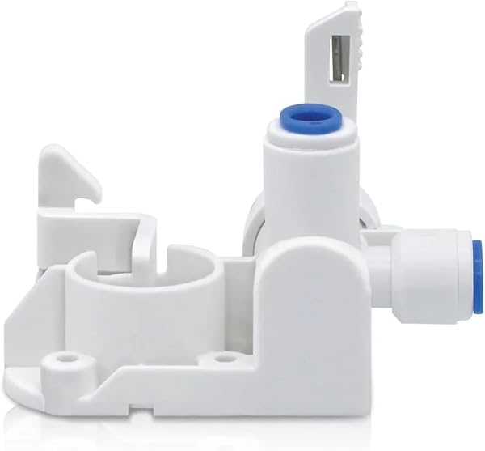

How to Install a Reverse Osmosis System (Step-by-Step, 2026)
PureFlow Lab is reader-supported. We may earn a commission when you buy through links in this guide — at no extra cost to you. As an Amazon Associate, we earn from qualifying purchases. See our Disclosure for details.
Installing a reverse osmosis system is one of the most satisfying DIY plumbing jobs a homeowner can take on — and one of the most approachable. If you can use a wrench and follow color-coded tubing, you can do it. Most under-sink RO installs take 1 to 2 hours the first time, need no special plumbing skills, and require only basic tools. This guide walks the entire process step by step, covers the differences for tankless systems, and shows you how to flush and test the system so you know it’s working.
Can You Install RO Yourself? (Yes — Here’s the Honest Take)
For the vast majority of homeowners, yes. Modern RO systems are designed for DIY installation: they come with the feed-water adapter, drain clamp, color-coded quick-connect tubing, and the faucet, plus printed instructions. The manufacturers want you to succeed without a plumber, because “easy to install” sells systems.
The one step that trips people up isn’t the plumbing — it’s drilling a hole for the dedicated RO faucet if your sink doesn’t already have a spare opening. On a stainless sink that’s a 10-minute job with the right bit; on granite or quartz it requires a diamond hole saw and a steady hand (more on that below). If you’re not comfortable drilling your countertop, that single step is the one worth hiring out — a plumber can do just the faucet hole, and you handle the rest.
Brands also differ in install ease. The iSpring RCC7AK, for example, uses a patented top-mount faucet specifically to make the hardest connection easier, and it’s the system owners most often praise for a smooth install. Tankless systems like Waterdrop’s skip the storage tank entirely (fewer parts) but require a power outlet under the sink.
What You’ll Need
The system itself. See our best reverse osmosis systems guide for under-sink picks, or the best tankless guide if you want to skip the tank. Renters who can’t drill should look at countertop RO instead — no installation required.
Basic tools you probably already have: an adjustable wrench, a Phillips screwdriver, a drill, a bucket and towels, and Teflon (plumber’s) tape.
Three companion products worth buying for the job:

HoneForest TDS Meter — Digital Water Tester
The simplest way to confirm your new system actually works: measure your tap water’s total dissolved solids (TDS) before, and your RO water after. A good system drops TDS by 90%+. 16,000+ reviews at 4.5 stars, under $15. ~$14.
Check Price on Amazon →Drilax Diamond Hole Saw Kit — for Granite, Quartz & Tile
If you need to drill a new faucet hole in a stone or composite countertop, you need diamond bits — a standard bit won’t touch granite and will crack it. This 10-piece kit covers the sizes you’ll need. 4,600+ reviews. (Skip it if your sink has a spare hole or you have a stainless sink — a $15 stepped bit handles stainless.) ~$38.
Check Price on Amazon →
Express Water Leak Stop Valve — Auto Shut-Off
An RO system sits under your sink for years. A mechanical leak-stop valve costs under $20, needs no power, and automatically shuts off the water supply if it senses moisture on the cabinet floor — cheap protection against a slow leak ruining your cabinet. ~$18.
Check Price on Amazon →Before You Start
Three things to do before you touch a wrench:
- Read your system’s manual. Every brand routes tubing slightly differently and uses its own color code. The steps below are universal, but your manual is the source of truth for which fitting is which.
- Clear out the cabinet and lay down a towel. You’ll be working in a tight space; give yourself room and catch drips.
- Plan your layout. Decide where the unit/filters will mount (usually the cabinet side wall) and, for tank systems, where the storage tank will sit (upright on the cabinet floor is fine). Tankless? Confirm there’s a power outlet within reach — the booster pump needs it.
Then shut off the cold water supply under the sink and open the kitchen faucet to relieve pressure.
Step-by-Step: Installing an Under-Sink RO System
This is the standard process for a tank-based under-sink system. Tankless differences are noted in the next section.
Step 1 — Shut off the cold water and tap into the supply
Close the cold-water shut-off valve under your sink. Disconnect the cold-water supply line to your faucet, and install the included feed-water adapter (a T-fitting) between the shut-off valve and the faucet line. This is where your RO system draws its source water. Hand-tighten, then snug with a wrench — don’t overtighten and crack the fitting.
Step 2 — Mount the RO faucet
If your sink has a spare hole (often covered by a cap, or used by a sprayer/soap dispenser you don’t need), use it. If not, you’ll drill one:
- Stainless steel sink: use a stepped drill bit. Start slow, keep it lubricated, and the hole takes a few minutes.
- Granite, quartz, or composite countertop: use a diamond hole saw with water for cooling. Go slow and let the bit do the work — forcing it cracks stone. If you’re nervous about this, it’s the one step worth hiring a plumber for.
Drop the faucet through the hole, secure it from below with the mounting hardware, and snug it down.
Step 3 — Install the drain saddle (drain clamp)
The RO system needs somewhere to send its wastewater. Attach the included drain saddle clamp to your sink’s drainpipe, above the trap (never below it, and not too close to the disposal). Drill the small pilot hole the clamp requires, line up the rubber gasket, and tighten the clamp around the pipe. The system’s drain line connects here.
Step 4 — Mount the filter unit
Mount the filter housings or the all-in-one unit to the cabinet wall using the included bracket and screws, leaving enough clearance below to change filters later. (On many tankless units, the whole system is one slim box that can stand on the cabinet floor.) Keep it accessible — you’ll be back here every 6-12 months for filter changes.
Step 5 — Connect the tubing (the easy part)
This is where color-coded quick-connect fittings make modern RO systems beginner-friendly. Following your manual’s color map, push each tube fully into its fitting until it seats (a firm push past the initial resistance). Typical connections: feed water in, faucet line out, drain line to the saddle clamp, and — for tank systems — a line to the storage tank.
Quick-connect tip: to seat a tube, push it in firmly; to remove it, push the collar in while pulling the tube out. Make sure every tube is fully inserted — a partially-seated tube is the #1 cause of leaks.
Step 6 — Position and connect the storage tank (tank systems)
Stand the pressurized storage tank upright in the cabinet (or lay it on its side if space demands — it works either way). Wrap the tank valve’s threads with Teflon tape, thread on the tank connector, and connect the tank tubing. Make sure the tank valve is open.
Step 7 — Add leak protection (recommended)
Set the leak-stop valve on the cabinet floor under the system per its instructions. It’s optional but cheap, and it can save you from a flooded cabinet if a fitting ever fails while you’re away.
Step 8 — Flush, Then Test
Don’t drink the first water. New RO systems need flushing:
- Open the feed-water valve and let water begin flowing into the system. Check every connection for leaks as pressure builds (have your towel ready).
- Open the RO faucet and let it run. Tank systems will sputter air at first, then run. Let the first full tank fill and then drain it completely — this flushes manufacturing residue and carbon fines from the new filters. Repeat for a second tank if your manual says so (most do).
- Check for leaks one more time after the tank has pressurized — that’s when slow leaks reveal themselves.
- Test the water. Use your TDS meter: measure your tap water (often 150-400+ ppm), then your RO water (should read well under 50 ppm, often single digits). A 90%+ drop confirms the membrane is doing its job.
That’s it — you have RO water on tap.
Tankless RO: What’s Different
Tankless systems (like Waterdrop’s G-series or iSpring’s RO500) simplify some steps and add one:
- No storage tank — skip Steps 6. Water is filtered on demand, so there’s no tank to position or connect. This reclaims a lot of cabinet space.
- Requires power — the booster pump needs a standard outlet under the sink. Confirm you have one before buying; this is the most common tankless surprise.
- Fewer connections overall — generally feed in, faucet out, drain. Many people find tankless easier to install than tank systems despite the power requirement.
Everything else — feed adapter, faucet, drain saddle, flushing, and testing — is the same.
Common Mistakes to Avoid
- Not fully seating the tubing. The top cause of leaks. Push each quick-connect tube firmly until it stops.
- Forgetting to open the tank valve. If your tank system produces only a trickle, check that the tank ball valve is open.
- Drilling granite with the wrong bit. A standard bit will crack stone. Use a diamond hole saw with water cooling, or hire out just that step.
- Drain saddle too low or near the disposal. Mount it above the trap and away from the disposal to avoid noise and backflow issues.
- Skipping the flush. Drinking the first tank means drinking carbon fines and manufacturing residue. Always discard the first full tank (or two).
- Overtightening fittings. Hand-tight plus a gentle snug is right; cranking down cracks plastic fittings.
When to Call a Plumber
DIY covers almost everything, but consider a pro if:
- Your countertop is granite/quartz and you’re not confident drilling it (hire out just the faucet hole).
- Your under-sink shut-off valves are old, corroded, or seized.
- You have no accessible cold-water shut-off and need one added.
- You want a tankless system but have no nearby outlet and need an electrician.
Even then, you can often do most of the install yourself and pay a pro for the single tricky step.
FAQ
How long does it take to install a reverse osmosis system?
For a first-timer, plan 1 to 2 hours for a standard under-sink system. Experienced installers do it in under an hour. The variable is drilling a faucet hole — if your sink already has a spare opening, you’ll be on the faster end; drilling granite adds time and care.
Do I need a plumber to install an RO system?
No, not for most installs. RO systems are designed for DIY with color-coded tubing and included hardware. The only step that sometimes warrants a plumber is drilling a faucet hole in a stone countertop — and you can hire out just that step while doing the rest yourself.
Can I install a reverse osmosis system myself on a granite countertop?
Yes, but you need a diamond hole saw (not a standard bit) and water to keep it cool, and you must drill slowly to avoid cracking the stone. If you’d rather not risk it, use an existing sink hole if you have one, or hire a plumber for the drilling step only.
How do I know if my RO system is working after installation?
Use a TDS meter. Measure your tap water (commonly 150-400+ ppm) and then your RO water — it should read well under 50 ppm, often in the single digits. A 90%+ reduction confirms the membrane is working. Also confirm there are no leaks after the system pressurizes.
Why is my new RO system leaking?
The most common cause is a tube that isn’t fully seated in its quick-connect fitting. Push each tube firmly until it stops. Other causes: an under-tightened (or over-tightened and cracked) fitting, or Teflon tape missing on threaded connections like the tank valve. Check connections one at a time after the system is under pressure.
Do tankless RO systems need electricity?
Yes. Tankless systems use a booster pump that requires a standard power outlet under the sink. Confirm you have one before buying a tankless system. Tank-based systems run on water pressure alone and need no power.
How often will I need to get back under the sink?
For filter changes — typically every 6-12 months for pre/post filters and every 2-4 years for the membrane. Mount the unit with enough clearance to swap filters easily. See our RO maintenance guidance for the full schedule.
Bottom Line
Installing a reverse osmosis system is a genuinely doable weekend project for most homeowners — about 1-2 hours, basic tools, and color-coded tubing that makes the connections beginner-friendly. The only step that gives people pause is drilling a faucet hole in stone, and even that’s manageable with a diamond bit (or a plumber for that one cut). Flush the first tank or two, confirm the drop with a TDS meter, add a leak-stop valve for peace of mind, and you’re done.
Haven’t picked a system yet? Start with our best reverse osmosis systems guide — or if you’d rather avoid installation entirely, a countertop RO system needs no plumbing at all.
Keep Reading
- Reverse Osmosis Faucets: Air-Gap vs Non-Air-Gap — which faucet you actually need
- Best Reverse Osmosis Systems for Home — pick your system before you install
- Best Tankless Reverse Osmosis Systems — fewer parts, no tank (needs power)
- Best Countertop Reverse Osmosis Systems — zero installation, for renters
- iSpring Reverse Osmosis Review — the easiest install thanks to its top-mount faucet
- What Is Reverse Osmosis Water? — how the system you just installed actually works
- Whole House RO vs Under-Sink RO — if you’re weighing a bigger install